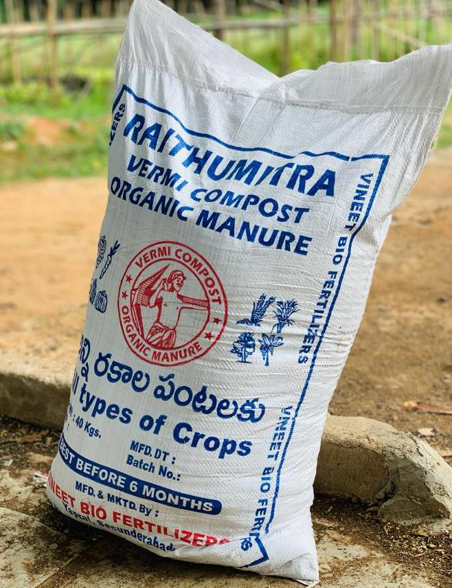
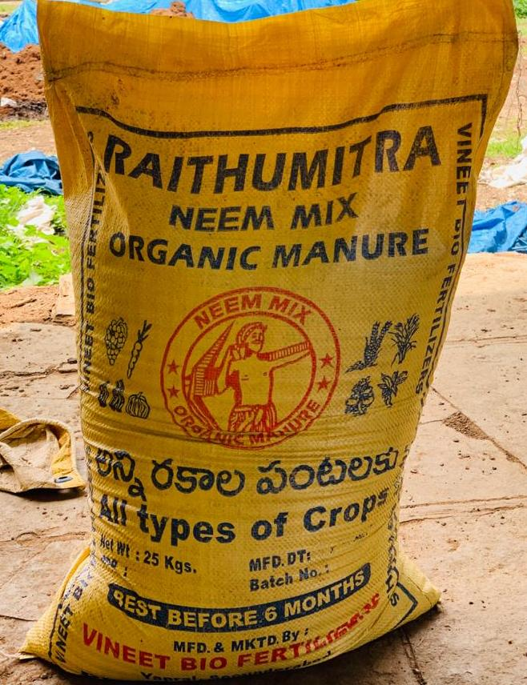
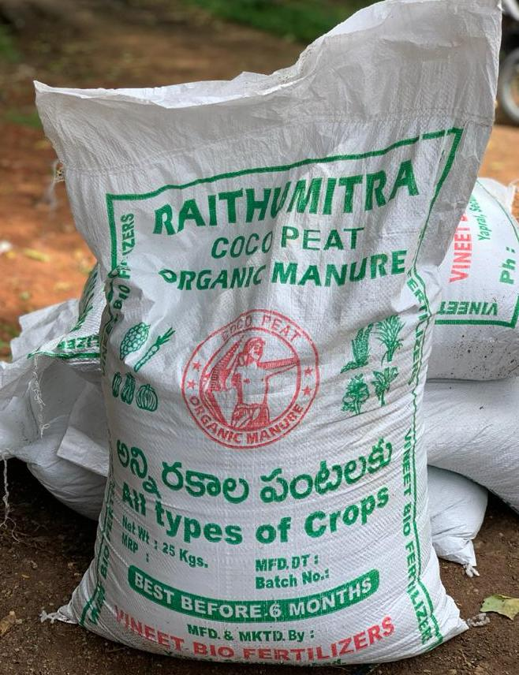

PRODUCTS AVAILABLE

Vermi Compost
Vermicompost (vermi-compost) is a nutrient dense organic fertilizer prepared by earthworms which feed on cow dung. When we use Vermi compost it improves the biological and chemical nature of the soil by making the soil nutrients dense, due to its unique nature the vermi compost can be used on any type of crop.
NEEM MIX
Neem Cake Bio Mix is a mixture of bio and organic fertilizer with neem being one of its main ingredients. It is used to enrich the soil by providing essential required nutrients.
Neem Cake Fertilizer is the most favored product used for plant fertilization by farmers and gardeners. It’s helpful in plant root growth and prevents pests from damaging the crop.


COCOPEAT
Cocopeat is made from coconuts and it helps in increasing the water retention properties of the soil and also supplies the crops with nutrients. It is naturally anti-fungal, making it an excellent choice to start seed but it is also used in rugs, ropes, brushes, and as stuffing. Cocopeat
gardening is also used as a soil amendment, potting mix, and in hydroponic production.